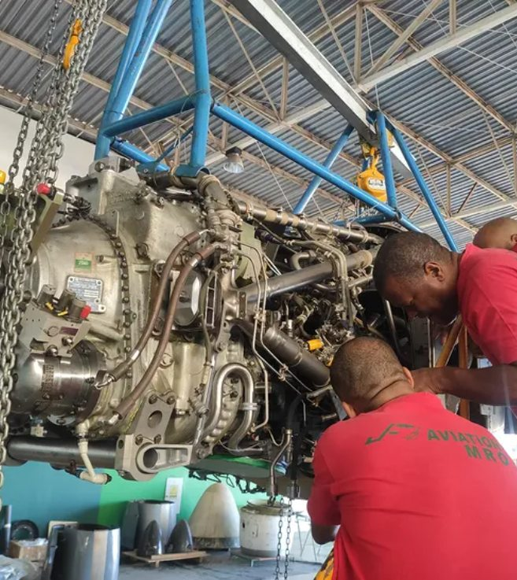
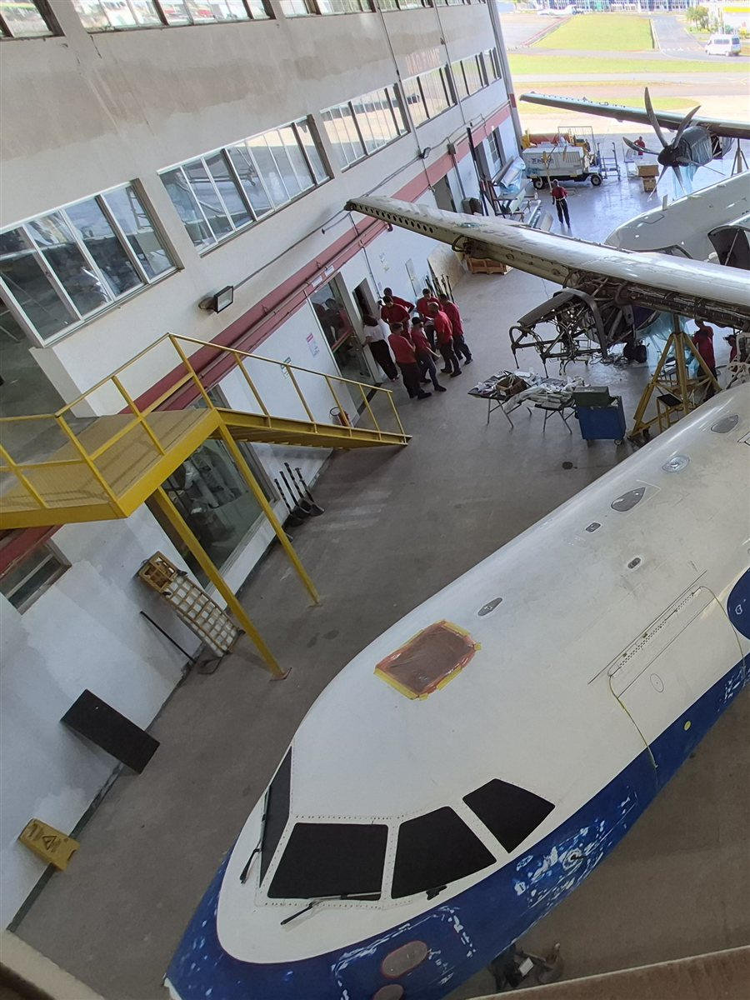
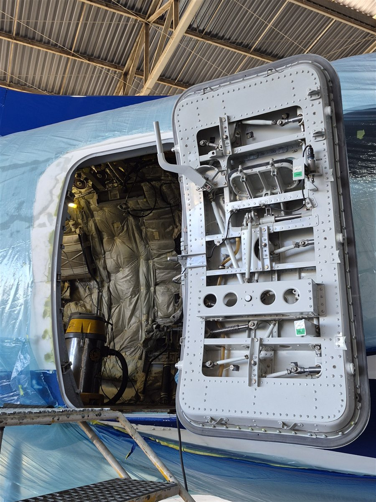
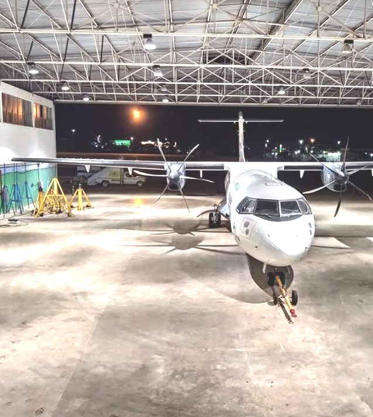
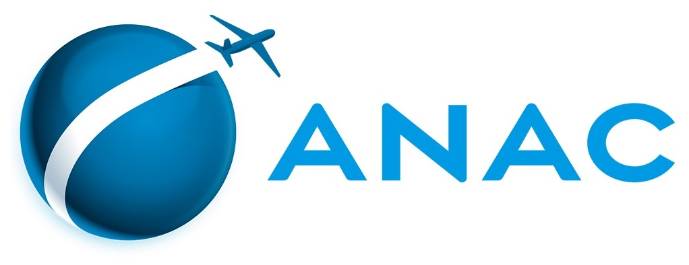
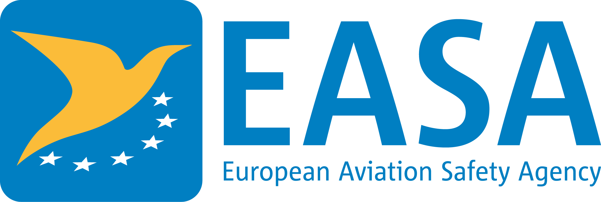

Precisão que mantém.
Confiança que move.
Manutenção
Aeronáutica
com excelência.
Soluções completas em manutenção, inspeções e componentes para diversas aeronaves — com certificação ANAC RBHA 145.
RBHA 145
24 horas
de Brasília
2002
Soluções completas
para sua aeronave
Manutenção Corretiva
Diagnóstico e reparo estrutural para retorno seguro da aeronave à operação.
Inspeções Programadas
Checks de manutenção nos níveis A, B e C, seguindo os manuais dos fabricantes.
Modificações e Reparos
Pintura, reparo de compósitos e soldas especiais executados por técnicos certificados.
Suporte Técnico Especializado
Equipe disponível 24 horas, todos os dias, para dar suporte à sua operação.

Manutenção
Inspeções
Componentes
Suporte TécnicoVantagens e competitividade
Frota ampla
De Boeing e Airbus a ATR — atendemos 10 modelos de aeronaves comerciais com uma única equipe técnica.
Localização estratégica
Hangar dentro do Aeroporto Internacional de Brasília, com atendimento 24h, agilizando transporte de peças e deslocamento de equipes.
Certificação RBHA 145
Aprovação da ANAC que autoriza organizações de manutenção a operar com segurança e conformidade regulatória — nossa desde 2007.
Compromisso com a qualidade e a segurança
Seguimos rigorosos padrões de qualidade e somos aprovados pelos principais órgãos reguladores da aviação.


Registro COM 0710-02/ANAC. Padrões regulatórios nacionais e internacionais de segurança aeronáutica.
Saiba maisOnde estamos
Localização privilegiada para agilizar o transporte de componentes e o deslocamento de equipes até nossos parceiros.